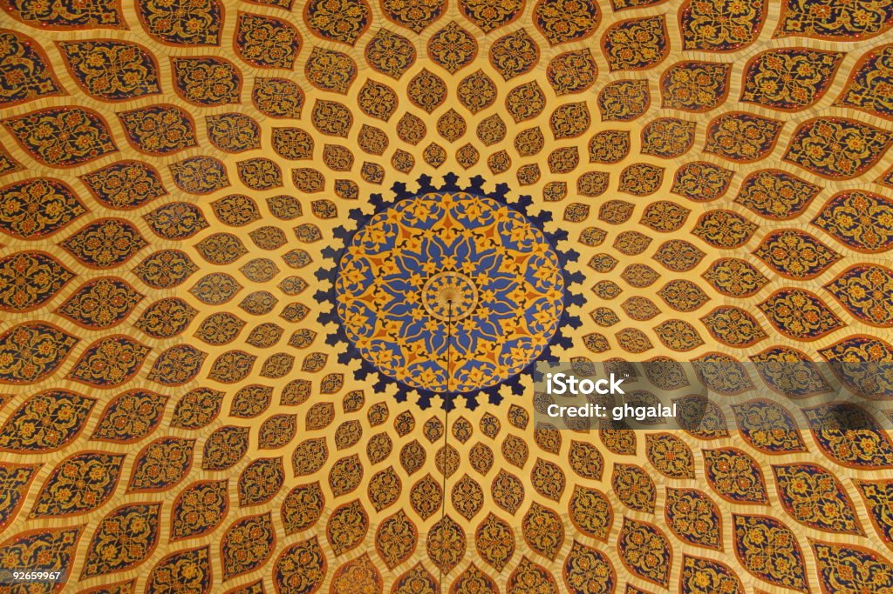
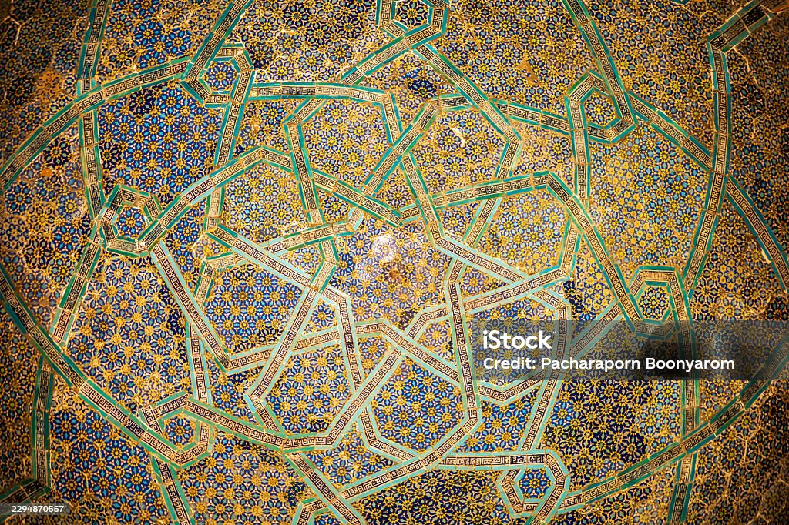
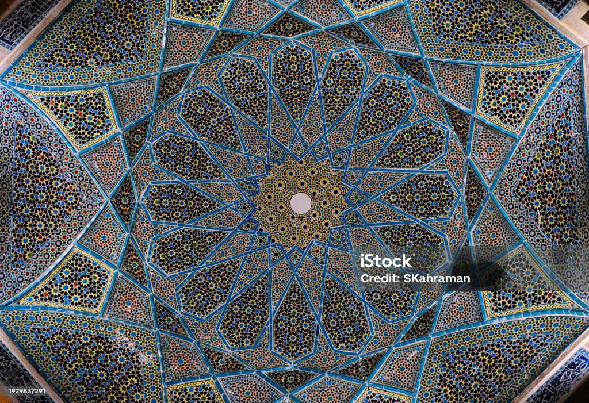
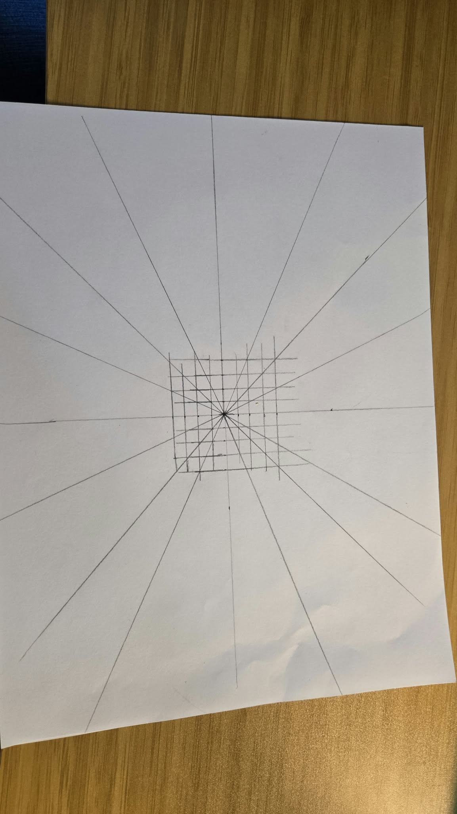
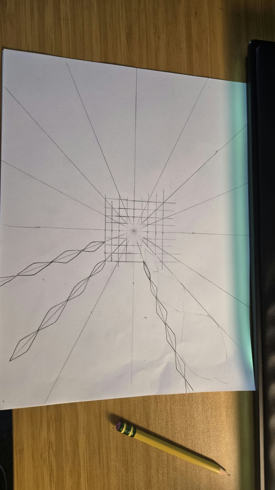

LA-Flora Inspired by Islamic Art in p5.js
Ian Robinson, GIXD-501, Fall 2026 · Week 7 homework · Steps and references
Most interesting problem: finding the center
The biggest problem I had was deciding where the pattern should start. In class we discussed manipulating the full dimensions of the canvas for positioning a point so translate(width / 2, height / 2) to put the origin at the middle of the canvas, but my reference, the gold dome, repeats outward from that point all the way to the edges of the window, and I could not work out how to carry that repeat from the center to the edge. My first attempts, a ring of petals at a fixed radius and a grid of small rosettes, did not grow the way the dome does.
I solved it by going back to sketching on paper. I measured out a center point, drew straight lines branching out from it, added a small grid around the middle, and connected the lines with rings to see how the pattern grows from the center toward the edge of the screen. The sketch showed that each ring is a constant ratio bigger than the one before it, which became r = g * pow(q, k) with q = 1.2, and that the straight lines were angles, which became a loop that rotates 24 petals around the center. Claude helped turn those measurements into calculations and organize the shapes on screen, such as sizing each petal from the spacing of the rings, until the pattern matched the gold dome reference. Once the pattern grew correctly from the center, I could place a succulent rosette in the middle on a soil-brown disc with a scalloped rim, so it looks like a plant in soil in a clay pot.
Problems and solutions
| Problem | Solution |
|---|---|
| Where the pattern should start and how to grow it from the center to the edges of the window | Sketched it on paper (center point, rays, grid, rings), then built the rings with r = g * pow(q, k) around translate(width / 2, height / 2) |
| Early attempts (a ring of petals at a fixed radius, a grid of small rosettes) did not look like the dome | Dropped both and rebuilt from the hand sketch |
| Petals floated with gaps between them | Sized each petal from the spacing of its ring, offset alternate rings by half a petal, and used an onion shape that tiles |
| The center grid was only a placeholder | Replaced it with a medallion: a scalloped rim, a soil-brown disc, and a succulent rosette |
| The first rosette (56 petals) looked like puzzle pieces | Cut it to 18 petals in 3 layers (8, 6, and 4) with a red outline |
| Blank canvas | setup() was missing its closing }, so draw() was nested inside it; added the brace |
| Washed-out colors | blendMode(ADD) stayed on for the whole sketch; removed it |
| Unwanted animation | Added noLoop(); the rhythm comes from the pattern itself (k % 2, sin(k * 0.9), k % 3) |
Assignment
Create a p5.js sketch that shows pattern, rhythm, and movement. Start with a visual pattern, develop it into a rhythmic composition that varies across the whole window, use HSB color mode to show color variation, use loops to iterate through variations, and pay attention to composition, tiling, and symmetry.
The functions used are documented in the p5.js reference.
Concept
Islamic art is commonly described through four components: calligraphy, geometric patterns, botanical ornament, and figural representation. I used that structure as a starting point and pointed it at the Los Angeles region. The geometric layer is an interlocking, onion-shaped tiling that grows outward from a center point. The botanical layer is a succulent rosette at the center, inspired by plants native to the region. LA yards often favor imported plants and green lawns over local, drought-tolerant ones, and the rosette puts a local plant back at the heart of the pattern. I added another layer to appear as the rim of a clay pot around soil for the ring of the succulent.
Reference images
| # | Description | Credit | How it was used |
|---|---|---|---|
| 1 | Gold dome ceiling with radial rings of pointed petals and a blue medallion (Persia Court, Ibn Battuta Mall, Dubai, UAE) | ghgalal, iStock #92659967 | Main structure: radial rings, interlocking petals, central medallion |
| 2 | Blue and gold tiled ceiling with green outlines (Shah-i-Zinda Necropolis, Samarkand, Uzbekistan) | Pacharaporn Boonyarom, iStock #2294870557 | Palette: green, brown, and gold |
| 3 | Blue star dome with 12-fold symmetry (Mausoleum of Hafez, Shiraz, Iran) | SKahraman, iStock #1929837291 | Considered, not used |
Steps
1. Choose a direction
Compared the three references. Image 1 became the structure because it is built from loops (rings, then petals per ring). Image 2 supplied the earthy palette. Image 3 was too detailed for a first sketch.



2. Early experiments
Tried a ring of petals drawn around the center with translate() and rotate(), and a grid of small rosettes based on my own grid sketch. Neither matched the look of Image 1, so both were dropped.
3. Sketch the structure by hand
A pencil drawing showed 16 rays meeting at one center point, a small grid at the middle, and chains of diamonds that grow as they move outward. This led to the key idea: rings that grow by a constant ratio, which reads as perspective.


4. Build the tiling
- Ring radius grows geometrically:
r = g * pow(q, k)withq = 1.2. - Petal width comes from the spacing between petals on a ring, and petal length from the spacing between rings, so the petals fill the space.
- Every other ring is offset by half a petal so the points slot into the gaps (brick-style tiling).
- Petals use an onion shape (
sq(sin(...))) with pointed ends, scaled by 0.92 so a thin gold gap shows through, like the borders in Image 1.
5. Add rhythm and color variation
The final sketch is static (noLoop()), so rhythm ONLY comes from the pattern itself. This was by design and inspired from Young Corn by Grant Wood that was given in the class resource:
- Progression: each ring is larger than the last.
- Alternation (period 2): offset rings and alternating dark and light petals (
k % 2). - Swell:
sin(k * 0.9)makes the inner motif grow and shrink ring by ring. - Accent (period 3): every third ring gets a small gold seed (
k % 3). - HSB color: hue moves from gold (40) to sage green (130) with
map()as rings move outward.
6. Design the center
Replaced the placeholder grid with a medallion: a scalloped orange-brown rim, a soil-brown disc, and a succulent rosette. The rosette is 3 layers of petals (8, 6, and 4) with a red outline, similar to the red tips on some succulents. An earlier version used 56 petals in a spiral and looked like puzzle pieces, so it was simplified.
7. Debug
Problems hit along the way and their fixes:
- Blank canvas:
setup()was missing its closing}, sodraw()was nested inside it. - Washed-out colors:
blendMode(ADD)stays on for the whole sketch; remove it or reset withblendMode(BLEND). - Unwanted animation: add
noLoop()insetup(). - Canvas size: use
createCanvas(windowWidth, windowHeight)so it matcheswindowResized().
References
- Srivastava, A. (2015, July 27). An Introduction To Islamic Art. Muslim Memo. https://muslimmemo.com/islamic-art/ (licensed CC BY 4.0). Used for: the four components of Islamic art (calligraphy, geometric patterns, botanical ornament, figural representation), the eight-sided star as a signature geometric form, and the point that figural art is limited mostly to private and secular settings.
- AI assistance: Claude (Anthropic) was used for brainstorming, and debugging code, and organizing these notes.